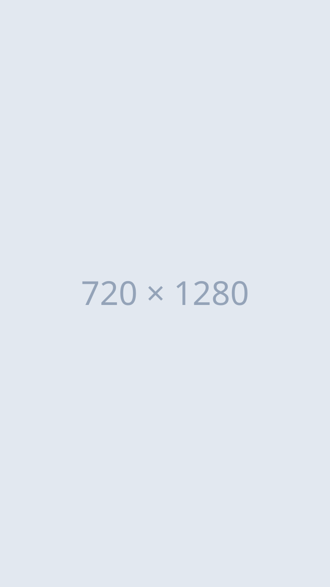

Content people stop scrolling for.
We're a social-first marketing agency in London and New York. Campaigns, creators and paid media — made for the feed, measured in sales.

Trusted by 120+ brands across 18 markets

@fizzwick Three flavours, zero boring 6.2M @tallypenny Payday, explained in 30s 864K @ollooats He only waits for the oat one 2.4M @arrowtide 5K before the 9 to 5 512K
ok this is genius
4.2M views
+212%
saves
Brands that let us run their feeds
- fizzwick
- halcyra skin
- Tallypenny
- Velloux
- arrowtide
- Saltroute
- ollo oats
- Pulsewell
- loftgrove
- Pixelmoor
We make
things people want
 to watch — then we
make them sell.
to watch — then we
make them sell.
Watch the 2026 Reel

Everything your brand needs to live on social.
All Services #SocialListening
#SocialListening
Know what to post, where and why — before you spend a penny.
Learn More about Social Strategy
1.2M views
Short-form video and posts, shot and edited every week.
Learn More about Content Studio
12creators per brief
The right voices, briefed well and paid fairly.
Learn More about Creators & UGC
120ad variants a month
Ads that look native and sell like ads.
Learn More about Paid Social
#LiveShopping
Turn views into checkouts without leaving the app.
Learn More about Social Commerce
wait, they actually replied?
Replies within the hour, in your brand's voice.
Learn More about Community

Attention, measured.
-
2.4B
Organic views in 2025
-
4,000+
Vetted creators, ready to brief
-
5.8x
Average paid social ROAS for DTC clients
-
18
Markets, run from London and New York
4,000 creators. We pick the right twelve.
Vetted for real audiences and real taste, then matched to your brief by people, not a filter.
Join the NetworkBrief to feed in four weeks.
-
Week 1
Listen
Audit, audience research and a social listening sprint.
-
Weeks 2–3
Make
Scripts, shoots and creators, ready for review.
-
Week 4
Launch
Organic and paid go live together, tracked from day one.
-
Always On
Learn
Weekly tests, monthly reports, nothing hidden.
What clients say in the comments.
-
1.2K likes
Pinned
Hannah Reed Head of Brand · Fizzwick
They didn't make ads that looked like TikToks. They made TikToks people actually shared.
-
932 likes
Sofia Marin Ecommerce Director · Halcyra Skin
Our TikTok Shop went from zero to our second biggest channel in three months.
-
578 likes
Emma Lund Brand Manager · Ollo Oats
The creator casting is scary good. Every face felt like our customer.
-
864 likes
Marcus Bell CMO · Tallypenny
CPA down 38% in a quarter, and the comments are nicer than ever.
-
411 likes
Daniel Okafor Marketing Lead · Arrowtide
Weekly reports that a founder can read in two minutes. Rare.
-
1.6K likes
Ryan Cole Founder · Pixelmoor
Launch week trended in four countries. We're still answering the DMs.